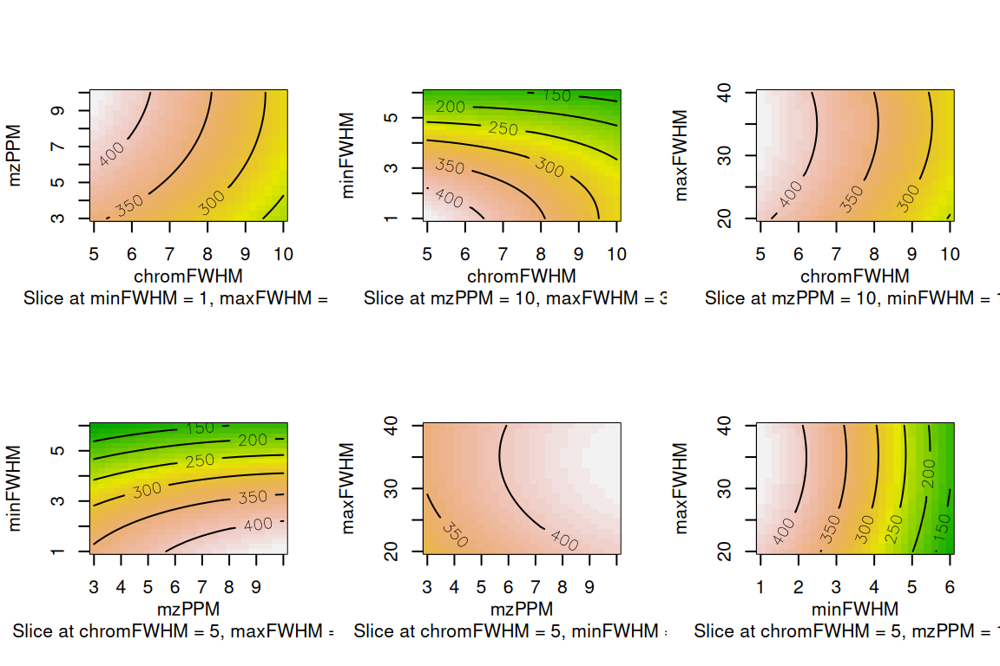
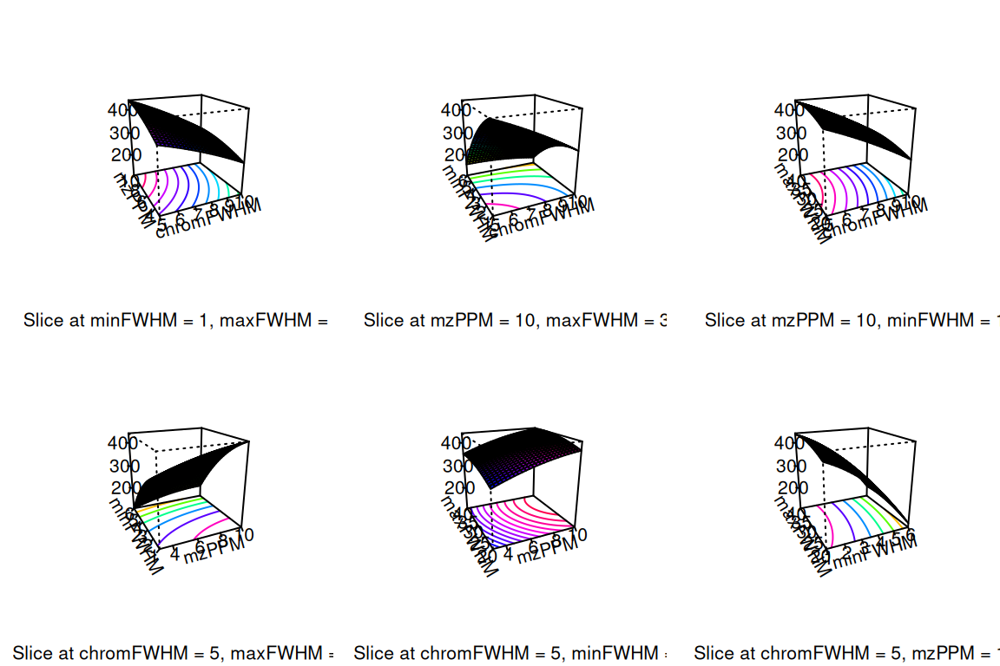

6.2 Feature parameter optimization
Many different parameters exist that may affect the output quality of feature finding and grouping. To avoid time consuming manual experimentation, functionality is provided to largely automate the optimization process. The methodology, which uses design of experiments (DoE), is based on the excellent Isotopologue Parameter Optimization (IPO) R package. The functionality of this package is directly integrated in patRoon. Some functionality was added or changed, the most important being support for other feature finding and grouping algorithms besides XCMS and basic optimization support for qualitative parameters. Nevertheless, the core optimization algorithms are largely untouched.
This section will introduce the most important concepts and functionalities. Please see the reference manual for more information (e.g. ?`feature-optimization`).
6.2.1 Parameter sets
Before starting an optimization experiment we have to define parameter sets. These sets contain the parameters and (initial) numeric ranges that should be tested. A parameter set is defined as a regular list, and can be easily constructed with the generateFeatureOptPSet() and generateFGroupsOptPSet() functions (for feature finding and feature grouping, respectively).
pSet <- generateFeatureOptPSet("openms") # default test set for OpenMS
pSet <- generateFeatureOptPSet("openms", chromSNR = c(5, 10)) # add parameter
# of course manually making a list is also possible (e.g. if you don't want to test the default parameters)
pSet <- list(noiseThrInt = c(1000, 5000))When optimizing with XCMS a few things have to be considered. First of all, when using the XCMS3 interface (i.e. algorithm="xcms3") the underlying method that should be used for finding and grouping features and retention alignment should be set. In case these are not set default methods will be used.
pSet <- list(method = "centWave", ppm = c(2, 8))
pSet <- list(ppm = c(2, 8)) # same: centWave is default
# get defaults, but for different grouping/alignment methods
pSetFG <- generateFGroupsOptPSet("xcms3", groupMethod = "nearest", retAlignMethod = "peakgroups")In addition, when optimizing feature grouping (both XCMS interfaces) we need to set the grouping and retention alignment parameters in two different nested lists: these are groupArgs/retcorArgs (algorithm="xcms") and groupParams/retAlignParams (algorithm="xcms3").
pSetFG <- list(groupParams = list(bw = c(20, 30))) # xcms3
pSetFG <- list(retcorArgs = list(gapInit = c(0, 7))) # xcmsWhen a parameter set has been defined it should be used as input for the optimizeFeatureFinding() or optimizeFeatureGrouping() functions.
ftOpt <- optimizeFeatureFinding(anaInfo, "openms", pSet)
fgOpt <- optimizeFeatureGrouping(fList, "openms", pSetFG) # fList is an existing features objectSimilar to findFeatures(), the first argument to optimizeFeatureFinding() should be the analysis information. Note that it is not uncommon to perform the optimization with only a subset of (representative) analyses (i.e. to reduce processing time).
ftOpt <- optimizeFeatureFinding(anaInfo[1:2, ], "openms", pSet) # only use first two analysesFrom the parameter set a design of experiment will be automatically created. Obviously, the more parameters are specified, the longer such an experiment will take. After an experiment has finished, the optimization algorithm will start a new experiment where numeric ranges for each parameter are increased or decreased in order to more accurately find optimum values. Hence, the numeric ranges specified in the parameter set are only initial ranges, and will be changed in subsequent experiments. After each experiment iteration the results will be evaluated and a new experiment will be started as long as better results were obtained during the last experiment (although there is a hard limit defined by the maxIterations argument).
For some parameters it is recommended or even necessary to set hard limits on the numeric ranges that are allowed to be tested. For instance, setting a minimum feature intensity threshold is highly recommended to avoid excessive processing time and potentially suboptimal results due to excessive amounts of resulting features. Configuring absolute parameter ranges is done by setting the paramRanges argument.
# set minimum intensity threshold (but no max)
ftOpt <- optimizeFeatureFinding(anaInfo, "openms",
list(noiseThrInt = c(1000, 5000), # initial testing range
paramRanges = list(noiseThrInt = c(500, Inf))) # never test below 500Depending on the used algorithm, several default absolute limits are imposed. These may be obtained with the getDefFeaturesOptParamRanges() and getDefFGroupsOptParamRanges() functions.
The common operation is to optimize numeric parameters. However, parameters that are not numeric (i.e. qualitative) need a different approach. In this case you will need to define multiple parameter sets, where each set defines a different qualitative value.
ftOpt <- optimizeFeatureFinding(anaInfo, "openms",
list(chromFWHM = c(4, 8), isotopeFilteringModel = "metabolites (5% RMS)"),
list(chromFWHM = c(4, 8), isotopeFilteringModel = "metabolites (2% RMS)"))In the above example there are two parameter sets: both define the numeric chromFWHM parameter, whereas the qualitative isotopeFilteringModel parameter has a different value for each. Note that we had to specify the chromFWHM twice, this can be remediated by using the templateParams argument:
ftOpt <- optimizeFeatureFinding(anaInfo, "openms",
list(isotopeFilteringModel = "metabolites (5% RMS)"),
list(isotopeFilteringModel = "metabolites (2% RMS)"),
templateParams = list(chromFWHM = c(4, 8)))As its name suggests, the templateParams argument serves as a template parameter set, and its values are essentially combined with each given parameter set. Note that current support for optimizing qualitative parameters is relatively basic and time consuming. This is because tests are essentially repeated for each parameter set (e.g. in the above example the chromFWHM parameter is optimized twice, each time with a different value for isotopeFilteringModel).
6.2.2 Processing optmization results
The results of an optimization process are stored in objects from the S4 optimizationResult class. Several methods are defined to inspect and visualize these results.
The optimizedParameters() function is used to inspect the best parameter settings. Similarly, the optimizedObject() function can be used to obtain the object that was created with these settings (i.e. a features or featureGroups object).
optimizedParameters(ftOpt) # best settings for whole experiment#> $chromFWHM
#> [1] 3
#>
#> $mzPPM
#> [1] 17
#>
#> $minFWHM
#> [1] 2.5
#>
#> $maxFWHM
#> [1] 24.5
#>
#> $logPath
#> NULLoptimizedObject(ftOpt) # features object with best settings for whole experiment#> A featuresOpenMS object (derived from features -> workflowStep)
#> Object size (indication): 134.4 kB
#> Algorithm: openms
#> Total feature count: 781
#> Average feature count/analysis: 390
#> Analyses: solvent-1, solvent-2 (2 total)
#> Replicate groups: solvent (1 total)
#> Replicate groups used as blank: solvent (1 total)Results can also be obtained for specific parameter sets/iterations.
optimizedParameters(ftOpt, 1) # best settings for first parameter set
optimizedParameters(ftOpt, 1, 1) # best settings for first parameter set and experiment iteration
optimizedObject(ftOpt, 1) # features object with best settings for first parameter setThe plot() function can be used to visualize optimization results. This function will plot graphs for results of all tested parameter pairs. The graphs can be contour, image or perspective plots (as specified by the type argument).
plot(ftOpt, paramSet = 1, DoEIteration = 1) # contour plots for first param set/experiment
plot(ftOpt, paramSet = 1, DoEIteration = 1, type = "persp") # pretty perspective plots
Please refer to the reference manual for more methods to inspect optimization results (e.g. ?optimizationResult).